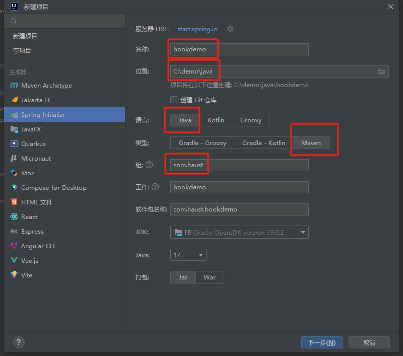
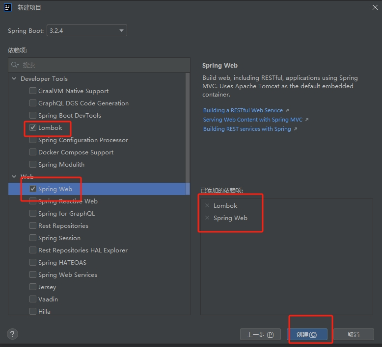
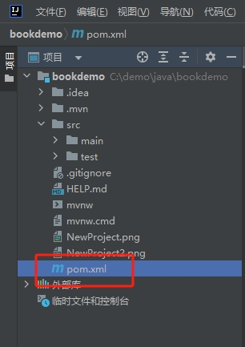
<?xml version="1.0" encoding="UTF-8"?>
<project xmlns="http://maven.apache.org/POM/4.0.0" xmlns:xsi="http://www.w3.org/2001/XMLSchema-instance"
xsi:schemaLocation="http://maven.apache.org/POM/4.0.0 https://maven.apache.org/xsd/maven-4.0.0.xsd">
<modelVersion>4.0.0</modelVersion>
<parent>
<groupId>org.springframework.boot</groupId>
<artifactId>spring-boot-starter-parent</artifactId>
<version>2.6.6</version>
<relativePath/> <!-- lookup parent from repository -->
</parent>
<groupId>com.haust</groupId>
<artifactId>bookdemo</artifactId>
<version>0.0.1-SNAPSHOT</version>
<name>bookdemo</name>
<description>bookdemo</description>
<properties>
<java.version>17</java.version>
</properties>
<dependencies>
<dependency>
<groupId>org.springframework.boot</groupId>
<artifactId>spring-boot-starter-web</artifactId>
</dependency>
<dependency>
<groupId>org.projectlombok</groupId>
<artifactId>lombok</artifactId>
<optional>true</optional>
</dependency>
<dependency>
<groupId>com.baomidou</groupId>
<artifactId>mybatis-plus-boot-starter</artifactId>
<version>3.5.1</version>
</dependency>
<dependency>
<groupId>com.alibaba</groupId>
<artifactId>druid-spring-boot-starter</artifactId>
<version>1.1.17</version>
</dependency>
<dependency>
<groupId>mysql</groupId>
<artifactId>mysql-connector-java</artifactId>
<version>8.0.29</version>
</dependency>
<dependency>
<groupId>org.springframework.boot</groupId>
<artifactId>spring-boot-starter-test</artifactId>
<scope>test</scope>
</dependency>
</dependencies>
<build>
<plugins>
<plugin>
<groupId>org.springframework.boot</groupId>
<artifactId>spring-boot-maven-plugin</artifactId>
<configuration>
<excludes>
<exclude>
<groupId>org.projectlombok</groupId>
<artifactId>lombok</artifactId>
</exclude>
</excludes>
</configuration>
</plugin>
</plugins>
</build>
</project>
其中新增加的部分如下
<dependency>
<groupId>com.baomidou</groupId>
<artifactId>mybatis-plus-boot-starter</artifactId>
<version>3.5.1</version>
</dependency>
<dependency>
<groupId>com.alibaba</groupId>
<artifactId>druid-spring-boot-starter</artifactId>
<version>1.1.17</version>
</dependency>
<dependency>
<groupId>mysql</groupId>
<artifactId>mysql-connector-java</artifactId>
<version>8.0.29</version>
</dependency>
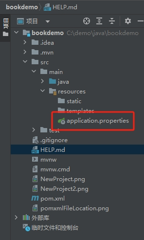
spring.application.name=bookdemo
spring.datasource.druid.driver-class-name=com.mysql.cj.jdbc.Driver
spring.datasource.druid.url=jdbc:mysql://localhost:3306/bookdemo?useUnicode=true&characterEncoding=utf8&useSSL=false
spring.datasource.druid.username=bookdemouser
spring.datasource.druid.password=password
mybatis-plus.global-config.db-config.id-type=auto
server.port=8085
其中jdbc:mysql://localhost:3306/bookdemo中的bookdemo表示数据库名称，bookdemouser表示数据库用户名，password表示数据库密码
CREATE DATABASE IF NOT EXISTS bookdemo;
USE bookdemo;
CREATE USER 'bookdemouser'@'localhost' IDENTIFIED BY 'password';
GRANT ALL PRIVILEGES ON bookdemo.* TO 'bookdemouser'@'localhost';
FLUSH PRIVILEGES;
CREATE TABLE IF NOT EXISTS `book` (
`id` bigint(20) NOT NULL AUTO_INCREMENT,
`title` varchar(255) NOT NULL,
`author` varchar(255) NOT NULL,
`publish_date` date DEFAULT NULL,
`pages` int(11) DEFAULT NULL,
PRIMARY KEY (`id`)
) ENGINE=InnoDB DEFAULT CHARSET=utf8mb4;
INSERT INTO `book` (`title`, `author`, `publish_date`, `pages`) VALUES ('Book Title 1', 'Author 1', '2024-03-29', 300);
INSERT INTO `book` (`title`, `author`, `publish_date`, `pages`) VALUES ('Book Title 2', 'Author 2', '2024-03-30', 250);
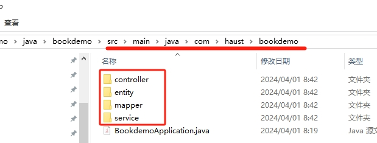
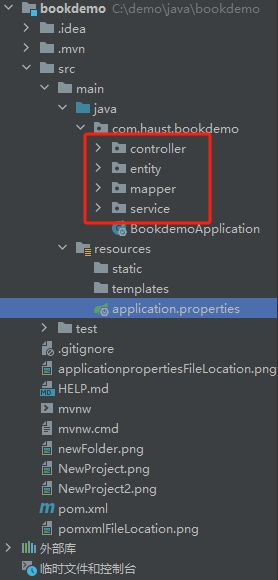
package com.haust.bookdemo.entity;
import lombok.Data;
@Data
public class Book {
private Long id;
private String title;
private String author;
private String publishDate;
private Integer pages;
}
package com.haust.bookdemo.mapper;
import com.baomidou.mybatisplus.core.mapper.BaseMapper;
import com.haust.bookdemo.entity.Book;
import org.apache.ibatis.annotations.Mapper;
@Mapper
public interface BookMapper extends BaseMapper<Book> {
}
package com.haust.bookdemo.service;
import com.haust.bookdemo.entity.Book;
import com.baomidou.mybatisplus.extension.service.IService;
public interface BookService extends IService<Book> {
}
package com.haust.bookdemo.service.impl;
import com.haust.bookdemo.entity.Book;
import com.haust.bookdemo.mapper.BookMapper;
import com.haust.bookdemo.service.BookService;
import com.baomidou.mybatisplus.extension.service.impl.ServiceImpl;
import org.springframework.stereotype.Service;
@Service
public class BookServiceImpl extends ServiceImpl<BookMapper, Book> implements BookService {
}
package com.haust.bookdemo.controller;
import com.haust.bookdemo.entity.Book;
import com.haust.bookdemo.service.BookService;
import org.springframework.beans.factory.annotation.Autowired;
import org.springframework.web.bind.annotation.*;
import java.util.List;
@RestController
@RequestMapping("/api/books")
public class BookController {
@Autowired
private BookService bookService;
@GetMapping
public List<Book> getAllBooks() {
return bookService.list();
}
@GetMapping("/{id}")
public Book getBookById(@PathVariable Long id) {
return bookService.getById(id);
}
@PostMapping
public void addBook(@RequestBody Book book) {
bookService.save(book);
}
@PutMapping("/{id}")
public void updateBook(@PathVariable Long id, @RequestBody Book book) {
book.setId(id);
bookService.updateById(book);
}
@DeleteMapping("/{id}")
public void deleteBook(@PathVariable Long id) {
bookService.removeById(id);
}
}
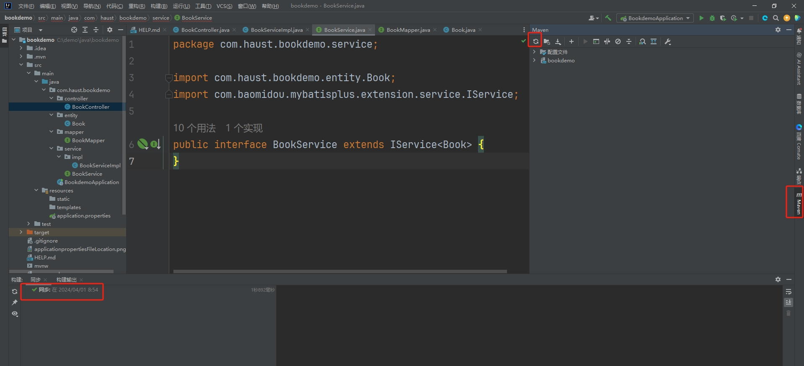
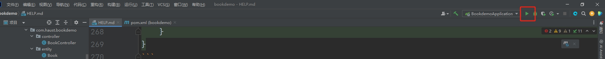
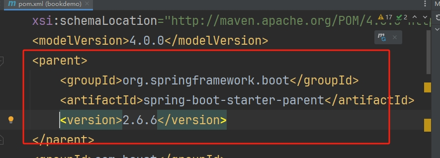
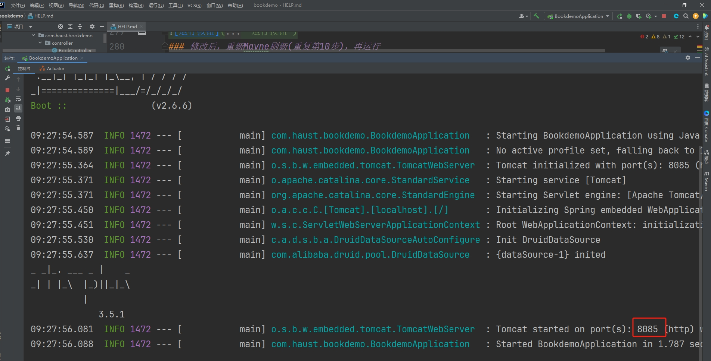
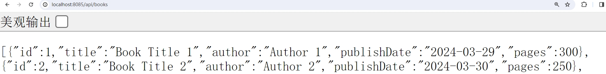